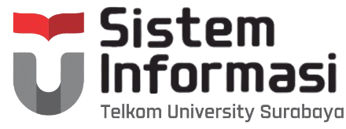

|  |
|
Admisi |
|---|
Dua Wisudawan Sistem Informasi Berhasil Meraih Predikat CumlaudeInstitut Teknologi Telkom Surabaya telah menggelar prosesi wisuda ke-1 secara luring di g hotel Grand Dafam, Surabaya pada Sabtu (26/03/2022) kemarin. Prosesi wisuda ini merupakan yang pertama dilakukan sejak kampus ini berdiri di tahun 2018 lalu. Pada wisuda pertama ini, 16 wisudawan telah dinyatakan lulus secara sah olch Rektor IT Telkom Surabaya Bapak Dr. Tri Arief Sardjono, S.T., M.T. Seluruh wisudawan merupakan mahasiswa yang berhasil lulus dengan masa stadi 3,5 tahun. Dua diantaranya merupakan mahasiswa program studi Sistem Informasi. Mereka adalah Amalina alina Tri Setya Berliana din Irene Dyah Ayuwati. Keduanya berhasil menyandang gelar S.Kom dengan predikat cumlaude. Wisudawan dengan IPK tertinggi adalah Amalina Tri S Berliana yang tidak lain merupakan mahasiswa program studi Sistem Informasi dengan IPK 3.96. Setya Pada prosesi wisuda ini pula, Rektor ITTelkom Surabaya telah menyampaikan pesannya dengan penuh sukacita. Beliau berpesan bagi seluruh wisudawan agar terus mengembankan diri sehingga dapat mengambil peran di era transformasi digital yang disruptif ini. Acara wisada ini dapat disaksikan melalui kanal youtube ITTelkom Surabaya youtube |
Artikel Terbaru
Artikel Terpopuler
|
Sistem InformasiSitus resmi Program Studi Sistem Informasi Institut Teknologi Telkom Surabaya. Website ini diperuntukkan sebagai media komunikasi internal & eksternal bagi mahasiswa, dosen, dan karyawan. Program Studi Sistem Informasi sudah ada sejak berdirinya Institut Teknologi Telkom Surabaya, herilasarkan Keputusan Memeri Riset. Teknologi, dan Pendidikan Tinggi no. 733/KPT/1/2018 Website ini menyajikan informasi tentang Program Studi Sistem Informáşi, profil, visi dan misi, struktur organisasi, akademisi, kurikulum, dosen, penelitian dan pengabdian kepada masyarakat |
Tautan Penting
Tautan Bermanfaat
|
Info Kontak
Media Sosial |